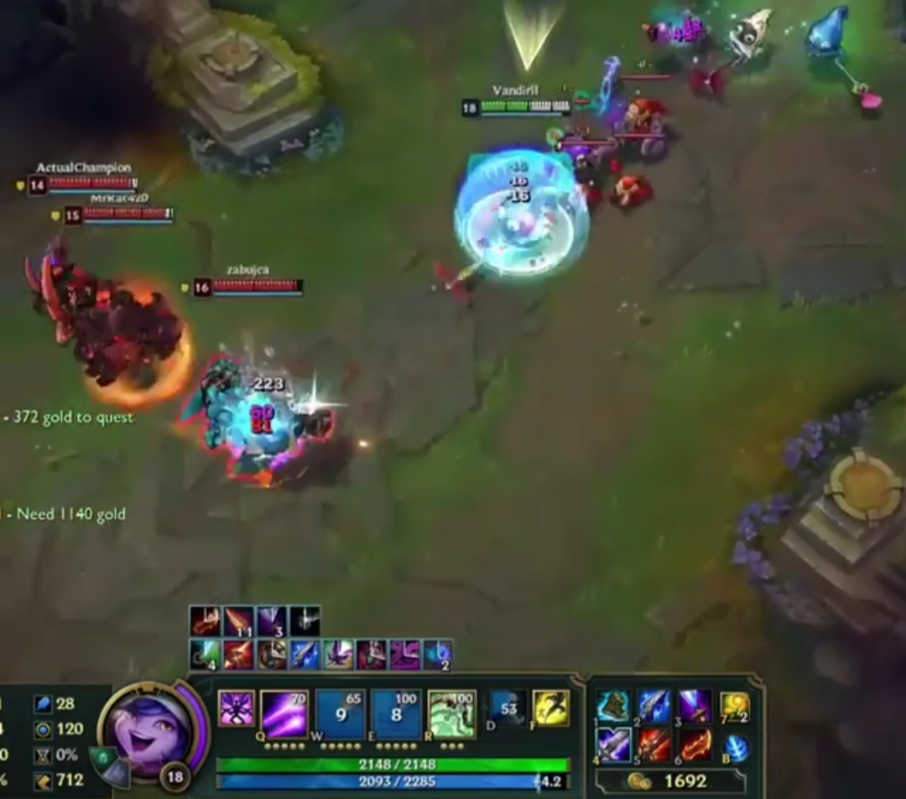

Meu nome é Maiara, tenho 16 anos e curso o primeiro ano do ensino médio no Centro Educacional Marista - SJ.
Sou uma garota com muita vontade e deteminação, pois é o que me move para realizar meus sonhos.
Comecei a me envolver com computação logo que me presentearam com
um notebook.. E não, não tinhamos acesso a internet na época, porém, dei
meu jeito. xD
Comecei "Fuçando" o Windows e descobrindo coisas novas. Tive a questão
de sugerir uma banda larga á minha mãe, não demorou muito e ela acabou
aceitando. Tive a oportunidade de conhecer o mundo dos games, pessoas
novas e adquirir conhecimentos com o poder da pesquisa. xD

Atualmente, possuo conhecimentos em diversos softwares na tentativa de
um canal do Youtube que não acabou dando muito certo.